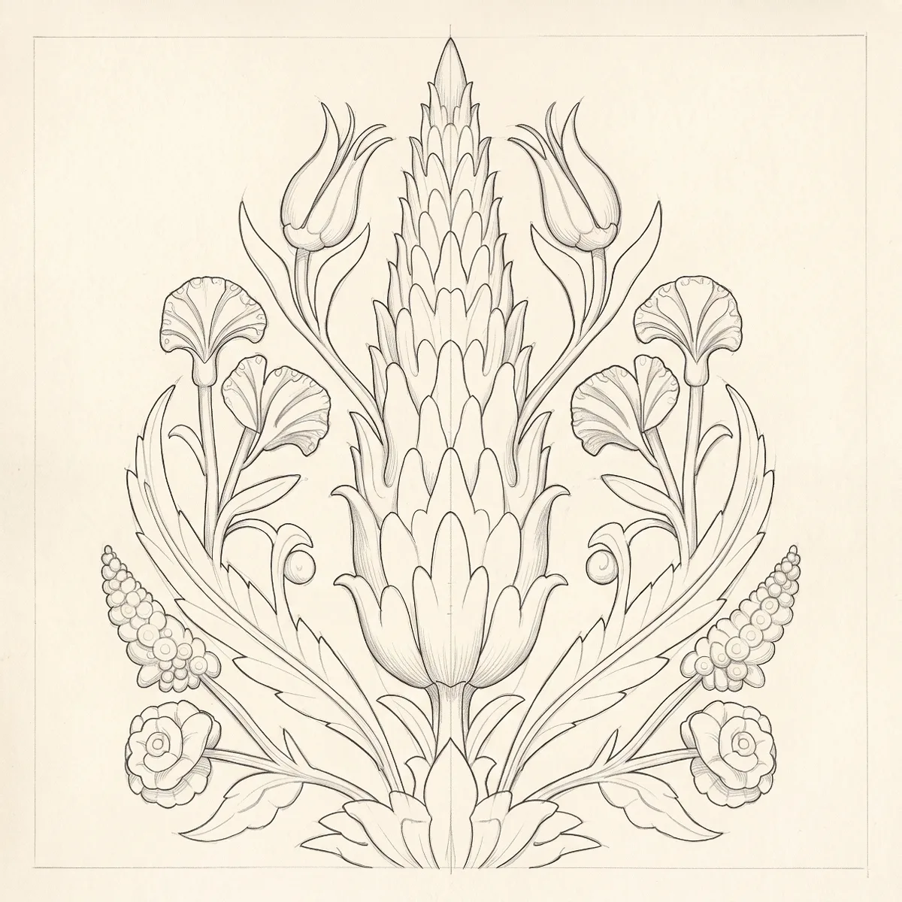
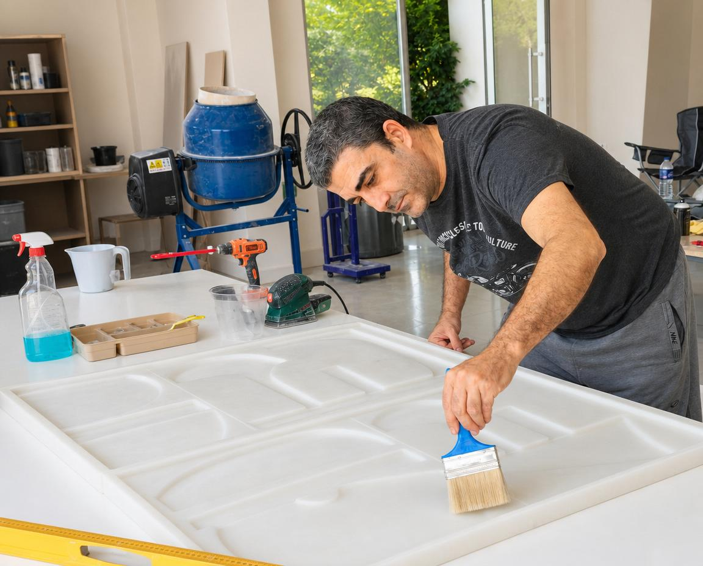

From drawing
to cast.
A project drawing becomes a cast relief panel in our Sapanca workshop. Below, we follow Cantus, a Library system, through the same route a bespoke drawing takes.
-
01
The drawing
Every project starts with an image: a hand sketch, a dimensioned elevation or a reference. Cantus began as this concept image, the cypress, tulip, carnation and rose of the Iznik tile tradition gathered under an arch.
-
02
The depth map
We translate the image into a depth map, where every grey value is a height: black is the ground of the panel, white its highest point. Relief depth on Cantus is 16 mm, ground to highest point. At this stage the arch came off and the motif took the whole panel. Changes are still digital, so they cost no tooling and no material.
-
03
Read in raking light
Before anything is cast, we read the surface digitally under raking light, low and from the side. This is where the relief's shadow appears, and where shallow forms flatten out and deep ones fill solid with shadow. You approve this render; nothing is cast until you do.
-
04
The relief
The approved surface is 3D-printed as the master. What you see here is not the master: it is computed live from the same depth map. Move the cursor or scroll, and the light and its shadows move with it.
In the workshop
Mould, pour, demould and finish: every step happens in the same workshop.





Send your drawing.
Whatever you have is enough to start: a sketch, an elevation or a reference.